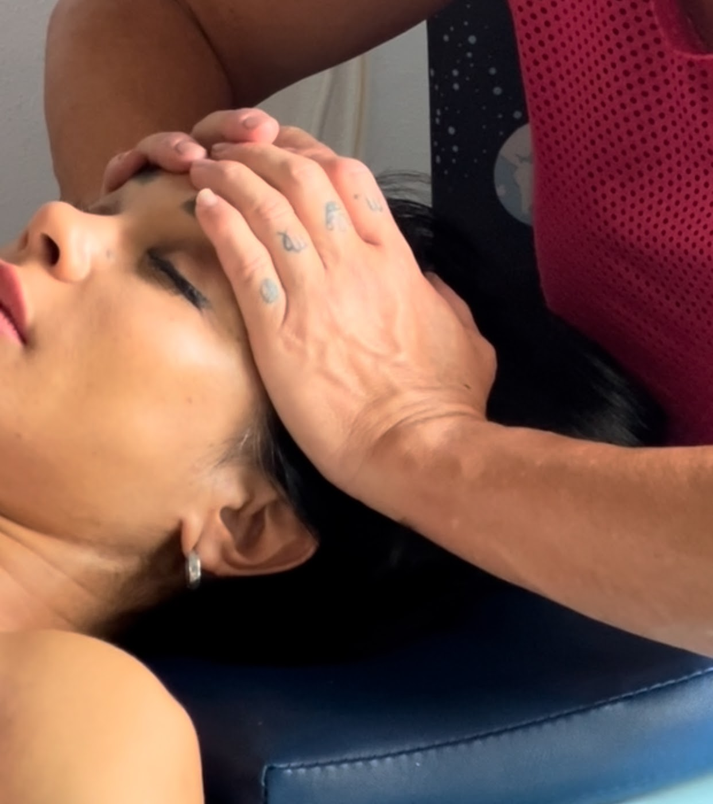
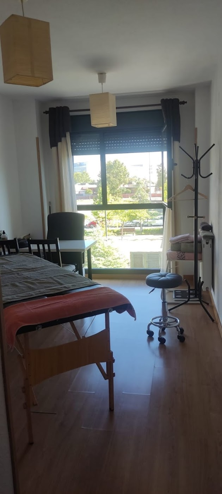
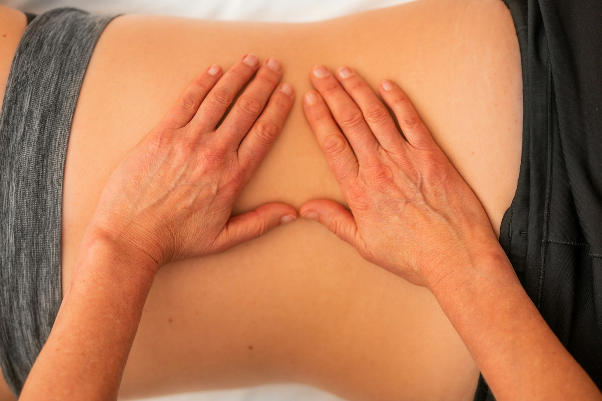
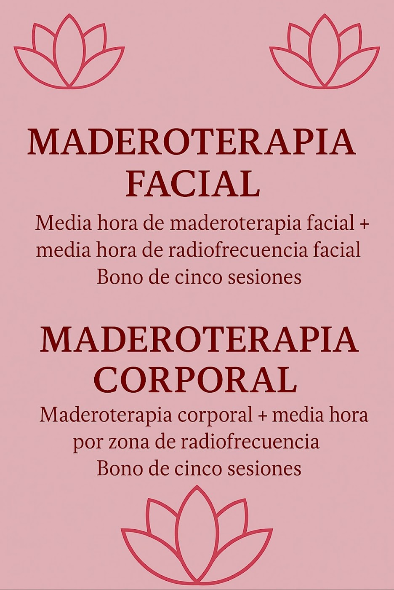

Almudena trata tu cuerpo como un todo: masaje miofascial, descontracturante y deportivo para aliviar el dolor, recuperarte de lesiones y volver a moverte sin molestias. Abierto todos los días.
★★★★★5,0 · 102 reseñas en Google
No tratamos solo la zona que duele: buscamos el origen de la molestia y trabajamos en profundidad para que notes la mejoría desde la primera sesión.
Cada sesión se adapta a ti, a tu lesión y a tu ritmo.
Masaje profundo que se nota desde la primera sesión.
Recupera, previene lesiones y rinde más.
102 reseñas de pacientes satisfechos.
Todo organizado por grupos, para que encuentres lo que buscas en segundos.
Un espacio tranquilo y luminoso en la Avenida de Miguel de Cervantes, 6.



5,0 de 5 estrellas · 102 reseñas
"Fui con una lesión en el hombro que me afectaba también el codo, las muñecas y hasta un dedo. Ella me ayudó muchísimo, se nota que sabe lo que hace y que le gusta su trabajo."
Wilmer H."Tenía problemas de cadera y no me daban solución. Probé con Almudena y desde la primera sesión empecé a notar una mejoría tremenda, el masaje miofascial me ha hecho mejorar muchísimo."
Santi C."Tenía mucho dolor en la espalda y me alivió bastante. He vuelto a repetir, tiene unas manos fantásticas."
Noelia P.Escríbenos por WhatsApp, cuéntanos qué te pasa y te buscamos hueco, cualquier día de la semana.
Av. de Miguel de Cervantes, 6
28942 Fuenlabrada, Madrid